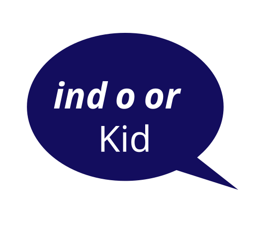

David Jonathan Ross released the first version of
this font in March 2025. The font was inspired by the
lettering in comic books. The typesets that were
typically used for comics weren’t variable. David
Jonathan Ross created the font with Ellis Bojar, a
publisher. The Indoor Kid font was designed with 4
variable axes: Width, Weight, Slant and Emphasis.
They specifically included ‘emphasis’ to include a
convenient way to “enlarge and vertically center
words or phrases within a block of text” which is a
very common practice in comic books.
AaBcCcDdEeFfGgHhIiJjKkLlMmNnOoPpQqRrSsTtUuVvWxYyZz
1234567890
!@#$%^&*()